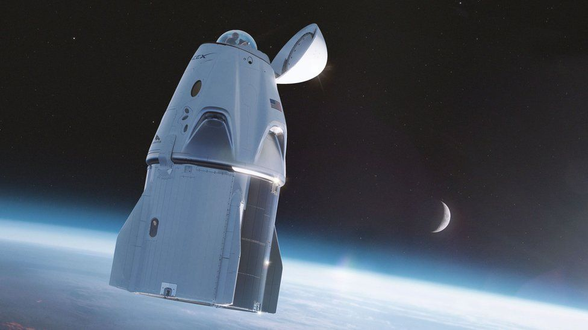
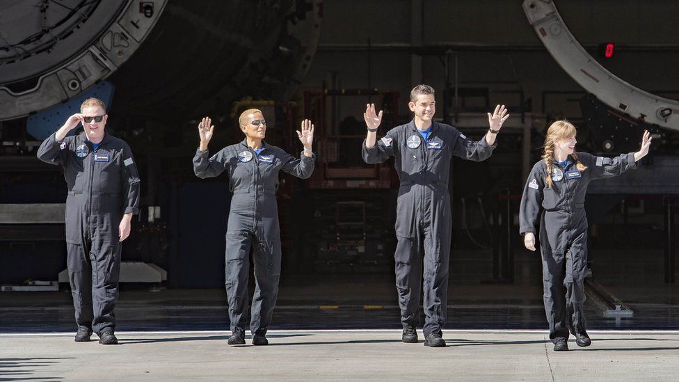
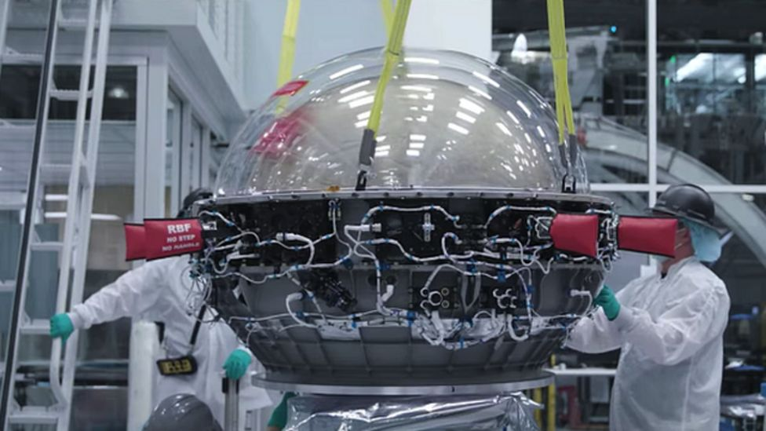
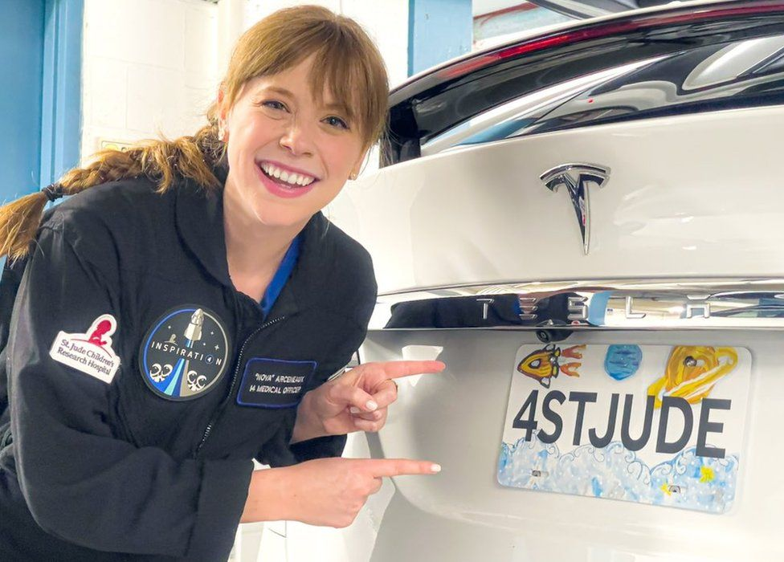
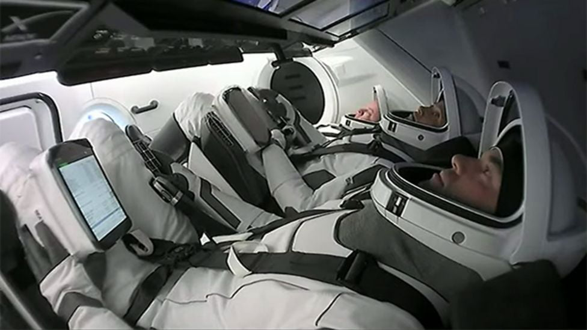
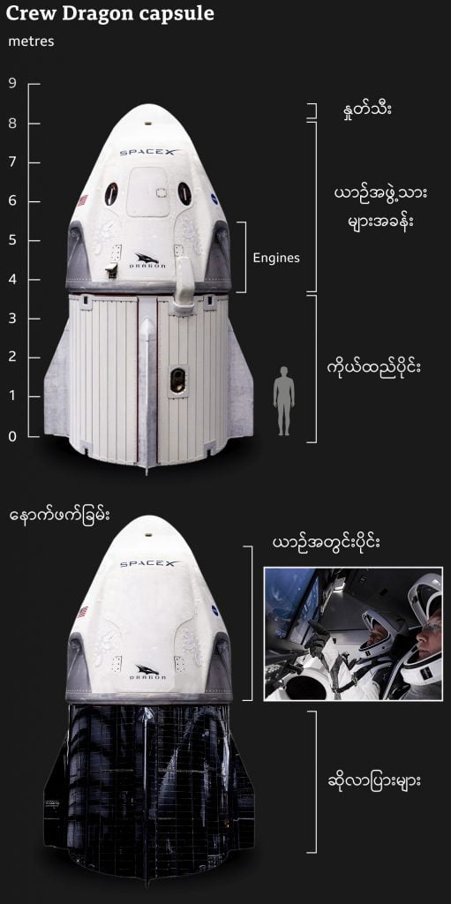

ဒီ SpaceX ရဲ့ Inspiration4 အာကာသယာဉ်ပေါ်မှာ အပျော်တမ်း အာကာသ ယာဉ်မှူး ၄ ဦး လိုက်ပါသွားပါတယ်။ အတိအကျ ပြောရရင်တော့ ဘီလီယံနာ ကုဋေကြွယ် သူဌေးကြီး တဦးနဲ့ အပျော်တမ်း အာကာသယာဉ်မှူး ၃ ဦးပါ။ ဒီ အာကာသ ယာဉ်မှူးတွေ လိုက်ပါသွားတဲ့ ဒုံးပျံ ထိပ်ဖူးကိုတော့ နဂါး (Dragon Capsule) လို့ အမည်ပေးထားပါတယ်။
ဒီ အာကာသ ယာဉ်မှူး ၄ ဦးဟာ အာကာသထဲက ကမ္ဘာပတ် လမ်းကြောင်းမှာ ၃ ရက်တိုင်တိုင် နေထိုင်မှာ ဖြစ်ပါတယ်။
ဒီ အာကာသ ခရီးစဉ်ဟာ SpaceX အတွက်တော့ အထူး အရေးပါတဲ့ ခရီးစဉ် တခုပဲ ဖြစ်ပါတယ်။ ဒါဟာ အာကာသ ခရီးသွား လုပ်ငန်း ဖွံ့ဖြိုးလာဖို့ လမ်းစလဲ ဖြစ်ပါတယ်။

ယခုလက်ရှိ SpaceX အာကာသယာဉ် လွှတ်တင်မှု အပြီးမှာ နောက်ထပ် ပုဂ္ဂလိက အာကာသယာဉ် နှစ်စီး ထပ်မံ စေလွှတ်ဖို့ ရှိနေပါသေးတယ်။ ပထမ တခုက အပြည်ပြည်ဆိုင်ရာ အာကာသ စခန်း (International Space Station) ဆီကို ရုရှား ရုပ်ရှင်ဒါရိုက်တာ တယောက်နဲ့ ရုပ်ရှင်မင်းသမီး တယောက်ကို သယ်ဆောင်သွားမယ့် ပျံသန်းမှု ဖြစ်ပြီး အောက်တိုဘာလမှာ လွှတ်တင်မှာ ဖြစ်ပါတယ်။ ဒုတိယ ပျံသန်းမှုကိုတော့ ဒီနှစ်ကုန် နောက်နှစ်ဆန်းလောက်မှာ လွတ်တင်မှာ ဖြစ်ပါတယ်။
ယခုလွှတ်တင်တဲ့ Inspiration4 မှာ လိုက်ပါသွားတဲ ယာဉ်မှူးတွေက ဂျားရက် အိုက်ဇက်မင်း ( Jared Issacman )၊ ဟေလီ အာဆင်းနောစ် ( Hayley Arceneaux )၊ ရှောင်ပရော့တာ ( Sian Proctor ) နဲ့ ခရစ်ဆင်ဘရိုစကီး ( Chris Sembroski ) တို့ပဲ ဖြစ်ပါတယ်။

ယခု ယာဉ်မှူးတွေ လိုက်ပါမယ့် Dragon Capsule ထိပ်ဖူးက အပြည်ပြည် ဆိုင်ရာ အာကာသ စခန်းနဲ့ အနီးအနားကိုတော့ ကပ်ပြီး ပျံသန်းမှု ပြုလုပ်မှာ မဟုတ်ပါဘူး။ ဒီ ယာဉ်ဟာ ကမ္ဘာမြေပြင်အထက် မိုင်ပေါင်း ၃၆၀ ကနေ ပျံသန်းမှာ ဖြစ်ပါတယ်။ ဒီ အမြင့်ဟာ အပြည်ပြည်ဆိုင်ရာ အာကာသစခန်း ပျံသန်းနေတဲ့ အမြင့်ထက် မိုင် ၁၅၀ ပိုမြင့်ပါတယ်။ အကြမ်းဖြင်းအားဖြင့် ဟတ်ဘယ် အာကာသ မှန်ပြောင်းကြီး (Hubble Space Telescope) ပျံသန်းနေတဲ့ အမြင့်လောက်မှာ ဖြစ်ပါတယ်။
ဒီအာကာသယာဉ်က ကမ္ဘာပတ်လမ်းကြောင်းမှာ ရည်မှန်းချက် သတ်သတ်မှတ်မှတ် မထားပဲ အလွတ်သဘော ပျံသန်းနေမှာပါ။ ဒါပေမယ့် ယာဉ်မှူးတွေကတော့ သိပ်ပြီး အားလပ်ကြမှာ မဟုတ်ပါဘူး။ သူတို့နဲ့ အတူ သိပ္ပံ စမ်းသပ်မှုတွေ ပြုလုပ်ဖို့ အတူသယ်ဆောင် သွားကြပါတယ်။ အားလပ်တဲ့ အချိန်တွေမှာတော့ အာကာသယာဉ်ရဲ့ ကျယ်ဝန်းတဲ့ ပြတင်းပေါက်ကနေ ကမ္ဘာမြေပြင်နဲ့ အာကာသရဲ့ အလှကို ကြည့်ရှုခံစားနိုင် ကြမှာ ဖြစ်ပါတယ်။

အသက် ၂၉ နှစ် အရွယ် ဟေလီ ဟာ ငယ်စဉ်က အရိုးကင်ဆာ ဝေဒနာ ခံစားခဲ့ရပြီး အောင်မြင်စွာ ကုသနိုင်ခဲ့သူပါ။ ယခုအခါ သူ့အရိုးကင်ဆာ ရောဂါ ကုသပေးခဲ့တဲ့ စိန့်ဂျုတ် ဆေးရုံမှာ ဆေးဝန်ထမ်း တဦးအဖြစ် တာဝန်ထမ်းဆောင် နေပါတယ်။ အိုက်ဇက်မန်းဟာ ဒီဆေးရုံ အတွက် အလှူငွေ ဒေါ်လာ သန်း ၂၀၀ ရှာဖွေပေးဖို့ ရည်မှန်းထားပါတယ်။

ခရစ် ဆန်ဘရိုစကီ ကတော့ အသက် ၄၂ နှစ် အရွယ် ရှိပြီး အမေရီကန် လေတပ်က စစ်မှုထမ်းဟောင်း တဦး ဖြစ်ပါတယ်။ ယခုအခါ တိုက်လေယာဉ်တွေ ထုတ်လုပ်တဲ့ လော့ခ်ဟိ မာတင် (Lockheed Martin) ကုမ္ပဏီမှာ အင်ဂျင်နီယာ တဦးအဖြစ် တာဝန်ထမ်းဆောင် နေပါတယ်။ သူကတော့ ကံစမ်းမဲ ပေါက်လို့ ပါလာတာ ဖြစ်ပါတယ်။ (ကံစမ်းမဲတွေကို စိန့်ဂျုတ် ဆေးရုံကို လှူဒါန်းတဲ့ အလှူရှင်တွေ ထဲက ရွေးချယ်တာ ဖြစ်ပါတယ်)။ တကယ်က သူ့သူငယ်ချင်းက ပေါက်တာဖြစ်ပြီး သူ့ကို အစားထိုး လိုက်ပါဖို့ လက်မှတ်ပေးခဲ့တာပါ။
ယခု အာကာသ ခရီးစဉ်ကို SpaceX က “ကမ္ဘာ့ပထမဆုံး အရပ်သားများချည်း လိုက်ပါတဲ့ အာကာသ ပျံသန်းမှု” လို့ ကြေငြာထားပါတယ်။ ဒါပေမယ့် “အရပ်သား”ဆိုတာဘာကို ဆိုလိုတာလဲ ဆိုတာပေါ် မူတည်ပြီး ဒီ ကြေငြာချက် ဟုတ်မဟုတ်ကို ဆုံးဖြတ်ရမှာ ဖြစ်ပါတယ်။ လပေါ်မှာ ပထမဆုံး လမ်းလျှောက်ခဲ့တဲ့ နီးလ် အမ်းစထရောင်းကလဲ ပြောရရင် အရပ်သားပါပဲ။ ဘာလို့ဆို သူက ၁၉၆၀ ကတဲက ရေတပ်ကနေ နှုတ်ထွက်ထားတာ ဖြစ်လို့ပါ။
ဘာပဲ ပြောပြော ဒီ အာကာသ ခရီးစဉ်ဟာ လူသားတွေရဲ့ အာကာသ သမိုင်းမှာတော့ အထူးအရေးပါတဲ့ ခရီးစဉ် ဆိုတာ ဘယ်လိုမှ ငြင်းလို့မရပါဘူး။

လွန်ခဲ့တဲ့ ၂၀၀၀ ပြည့်လွန်နှစ်တွေ အတွင်းမှာ ဘီလီယံနာ သူဌေးကြီးတွေ အပြည်ပြည် ဆိုင်ရာ အာကာသစခန်းပေါ် အလည်အပတ် လာကြတာတွေ ရှိလာပါတယ်။ ဒါပေမယ့် ၂၀၀၉ ခုနှစ်မှာတော့ အပြည်ပြည် ဆိုင်ရာ အာကာသစခန်းပေါ် လူလွှတ်တင်တဲ့ ရုရှား အာကာသယာဉ်တွေပေါ်က ထိုင်ခုံနေရာတွေ အားလုံးကို နာဆာက သိမ်းကြုံးဝယ်လိုက်တဲ့ အတွက် အပြင်လူတွေ လိုက်ပါဖို့ မဖြစ်နိုင်တော့ဘူး ဖြစ်သွားပါတယ်။
အခု ပုဂ္ဂလိက အာကာသ လွှတ်တင်ရေး လုပ်ငန်းတွေကတော့ ပိုပြီး အပြိုင်အဆိုင် များပါတယ်။ အာကာသ လွှတ်တင်ရေး ကုမ္ပဏီ တွေလဲ အများအပြား ပေါ်ပေါက်လာလို့ တဖြည်းဖြည်း ဈေးတွေ ကျလာမယ်လို့ မျှော်လင့်ကြပါတယ်။
SpaceX တည်ထောင်သူ အီလွန်မာစ်ခ် (Elon Musk)ကတော့ လူသားတွေကို “ဂြိုလ်ပေါင်းစုံနေသူများ (a multi-planet species)” ဖြစ်လာအောင် လုပ်ဖို့ ရည်မှန်းထားပါတယ်။
အိုက်ဇက်မန်းကလဲ အခု ခရီးစဉ်ကို သူများထက် ထူးအောင် လုပ်ဖို့ ရည်ရွယ်ခဲ့တာပါ။ အခု ပျံသန်းတဲ့ မိုင် ၃၆၀ အမြင့်ဆိုတာ ၂၀၀၉ ခုနှစ် ဟတ်ဘယ် မှန်ပြောင်းကြီး လွှတ်တင်တဲ့ နောက်ပိုင်း ဘယ်လူသားမှ မတက်ရောက်တော့တဲ့ အမြင့်ဖြစ်ပါတယ်။
“ကျွန်တော်တို့ အပြည်ပြည်ဆိုင်ရာ အာကာသ စခန်းဆီ ဥဒဟို သွားနေခဲ့တာ ကြာပါပြီ။ ဒါပေမယ့် ကျွန်တော်တို့ လကမ္ဘာကို ပြန် အခြေချကြမယ်၊ အင်္ဂါဂြိုလ်ကို သွားကြမယ်၊ အခြား ဂြိုလ်တွေကို ခြေဆန့်ကြမယ် ဆိုရင် အခု ကျွန်တော်တို့ သွားလာနေတဲ့ လုံခြုံစိတ်ချရတဲ့ ရပ်ဝန်းကနေ နဲနဲလေးလောက် ဖြစ်ဖြစ်တော့ အပြင်ထွက်ကြည့်ကြဖို့ လိုပါလိမ့်မယ်” လို့ အိုက်ဇက်မန်းက ခရီးမစမှီ သတင်းစာ ရှင်းလင်ပွဲမှာ ပြောကြားသွားပါတယ်။
အချို့သူတွေကတော့ SpaceX လို ဒုံးပျံတွေကြောင့် ကမ္ဘာလေထုနဲ့ ပါတ်ဝန်းကျင်အပေါ် ဖြစ်ပေါ်လာနိုင်မယ့် အကျိုးသက်ရောက်မှုတွနဲ့ ပါတ်သက်လို့ စိုးရိမ်မကင်း ရှိကြပါတယ်။
SpaceX အတွက် သုံးတဲ့ Falcon-9 ဒုံးပျံလောင်စာဟာ အထူးပြုပြင်ထားတဲ့ ရေနံဆီ (kerosene) ကို အသုံးပြုထားတာ ဖြစ်ပါတယ်။ ဟိုက်ဒရီုဂျင်သုံး ဒုံးပျံတွေနဲ့ မတူတာကတော့ ဒီ ရေနံဆီ လောင်ကျွမ်းမှုကြောင့် ကာဘွန်ဒိုင်အောက်ဆိုက် အများအပြား ထွက်လာတာပဲ ဖြစ်ပါတယ်။ ဒီ ကာဘွန်ဒိုင်အောက်ဆိုက်က ဖန်လုံအိမ် အာနိသင်ကို ပိုမို ဆိုးရွားလာစေနိုင်လို့ပါ။ ဒါပေမယ့် ဒီလို ဒုံးပျံတွေက ထွက်တဲ့ ကာဘွန်ဒိုင် အောက်ဆိုက် ပမာဏက တကယ်တော့ တကမ္ဘာလုံးနဲ့ ယှဉ်ရင် ပြောပလောက်တဲ့ ပမာဏတော့ မဟုတ်ပါဘူး။ နောက်ပိုင်း ဥဒဟို သွားလာနေကြရင်တော့ မပြောတတ်ဘူးပေါ့လေ။
